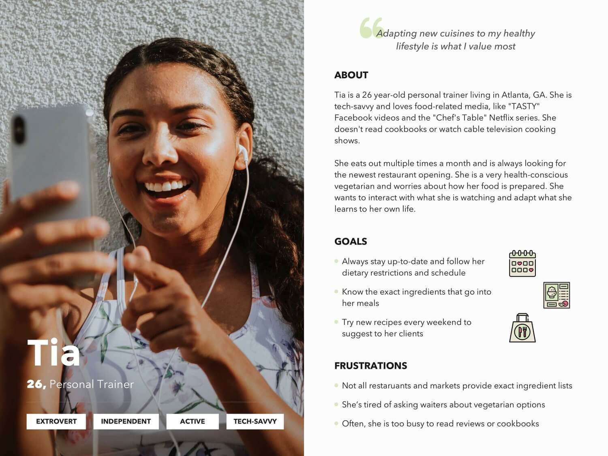
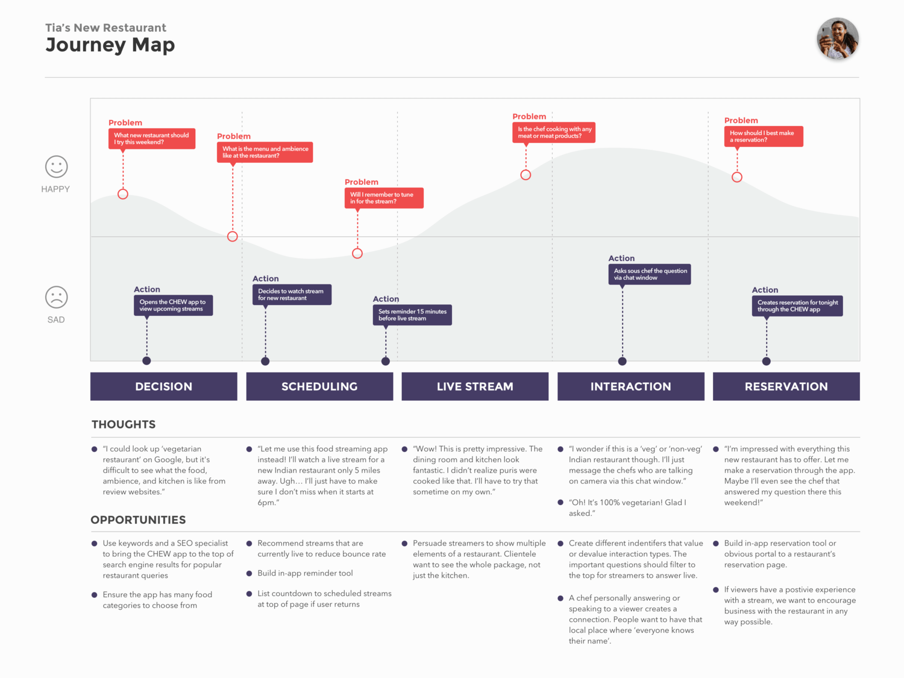

CHEW
Conceptual restaurant streaming app
TIMELINE
March - May 2019
ROLE
Research, Branding, Design, Animation
Introduction
GOAL
My main goal with this personal project was to take an Android product from conception to handoff while incorporating UX research and testing into my design process. I seized on a friend’s idea for a streaming platform focused on food.
PROBLEM
- Niche consumers and food choice are growing, from vegans and foodies to organic and gluten-free food.
- Consumers want to learn from professional chefs, but cable cooking shows are slow and lack interaction while live streaming platforms aren’t focused on food content.
- Restaurants want to connect with new customers, but rely on word-of-mouth and unpredictable reviews.
SOLUTION
- CHEW was conceptualized as a ‘mobile food cinema’ that allows consumers, restaurants, and companies to connect over food.
- Users can interact directly with chefs while learning about local restaurants and new recipes.
- Restaurants reach new clientele by showcasing their kitchen, talent, and menu.
- The business model for CHEW was similar to that of the Twitch streaming platform. The app is free to use, with profit being earned from advertising revenue and question credit purchase.
Research
SURVEY
I surveyed 21 people with 31-questions about technology, food, and my product concept. Based on these responses, I defined a persona and main use case for the project.
PERSONA
The survey responses suggested that my target audience were younger, tech-savvy foodies who eat out often. I aimed to provide this target audience with a community to learn about local restaurants and to directly interact with chefs. This resulted in the persona for this project, who I named Tia.
JOURNEY MAP
To better understand an average experience with the platform, I mapped the flow for my persona's main use case. Mapped below is Tia trying CHEW for the first time, setting a stream reminder, asking a question, and finally making a reservation (her main goal).
Design
PROCESS
USABILITY TESTING
A round of usability testing, consisting of two test types, was conducted on each successive prototype. For the unstructured test, I asked the user to speak about their thoughts while exhibiting how they would use the app. For the task completion test, I ranked how easily 11 persona tasks were completed by users (from one being worst to three being best).
Usability testing was critical to reassessing how my designed solution aligned with my persona’s goals. When returning to design, I focused on difficult tasks (low scores) and issues that arose repeatedly. For example, many users scored poorly on the restaurant reservation task, leading me to rethink how the reservation screen connected to the rest of the app.
FEATURES
CHEW stands apart from other competitors in the food industry by allowing you to directly learn and interact with chefs and restaurants. I focused my design process around these core features:
1. Recipes:
Streamers can’t always go into detail about the measurements and steps in real time. Instead, a restaurant can upload a recipe for users to refer to while watching the dish being cooked.
2. Question Credits:
On other streaming platforms, the chat box is a wall of quickly moving text and memes. Not the best place to cut through the noise and ask specifics. A question credit can be used to pin a message to the top of the chat box for the streamer to answer. One credit per day is provided for free, with a paid option to purchase more.
3. Reservations:
If you watch a restaurant’s stream that particularly impresses you, you can always go to their profile and make a reservation—connecting you to their seat availability and calendar.
Conclusion
SUCCESS METRICS
The final deliverables included a style guide, 49 mobile screens ready for development, tentative tablet and web mockups, and an animated prototype.
Success for this project was defined by user completion of the persona’s main task: making a reservation. While testing, I rated the ease by which users accomplished this main task with the user interface. The task completion rating (from one to three) rose over the course of usability testing, indicating the final solution was the most user-friendly.
LESSONS
By the end of the project, I concluded that a food streaming app wasn’t viable for the market. A similar platform called “Nom” was launched by YouTube co-founder Steve Chen in 2016 with $4.7 million in funding and backing from celebrities. Despite this support, the platform was taken down in 2018. Young people who are comfortable with live streaming as a technology aren’t that interested in cooking. Additionally, the realities of technology and food don’t fit well together. Cooking in a hot, hectic kitchen with dirty hands while trying to handle cameras and answer questions isn’t realistic.
My user survey had too many questions and didn’t provide as valuable data as expected. Surveys aren’t always reliable as your respondents don’t represent average users. Next time, I will begin my research process with qualitative user interviews where I can obtain more thorough responses.
Having one persona and use case while designing was key. There is a laundry list of potential features that could be added to the app. Framing these in the context of what would be best for my average user helped me focus on only the essential features.